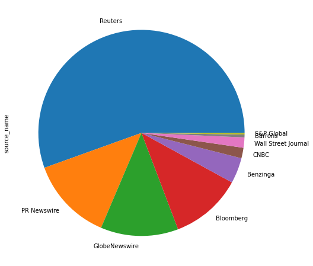
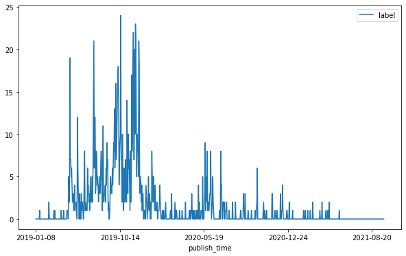
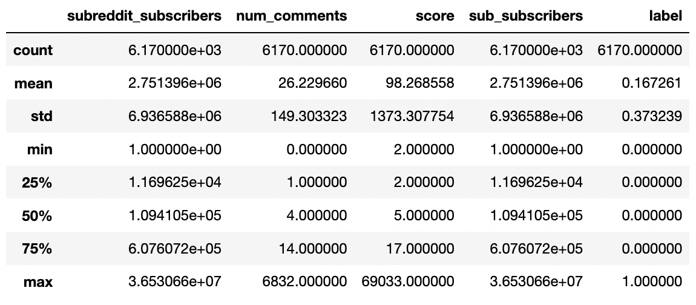
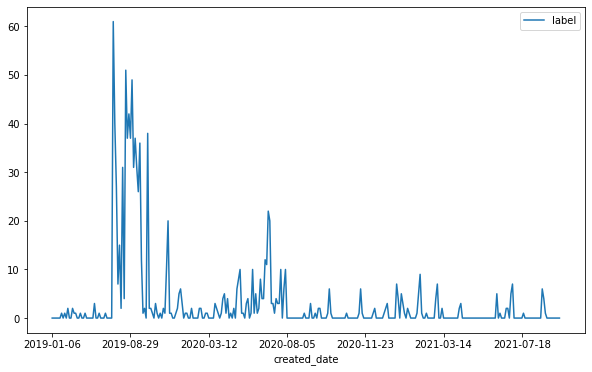
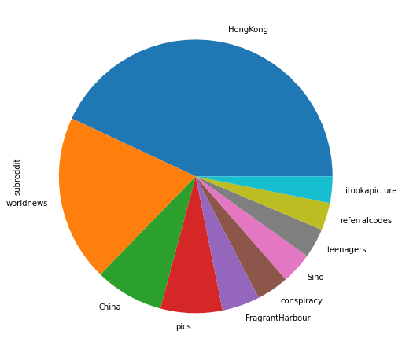
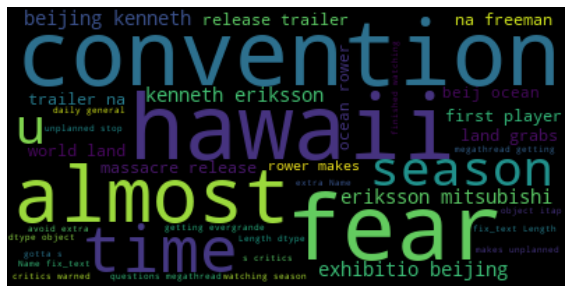
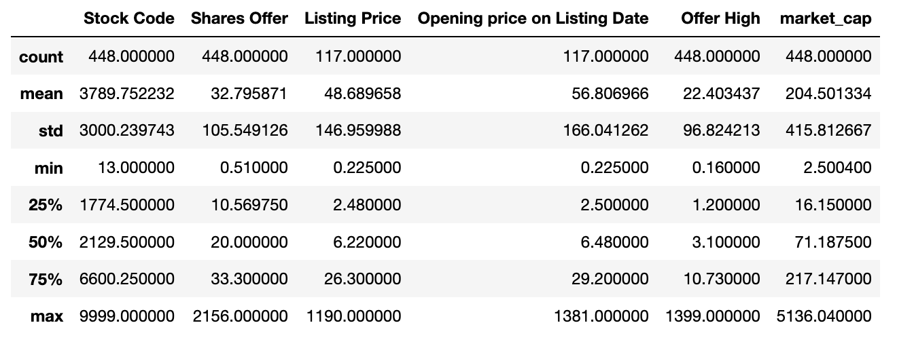
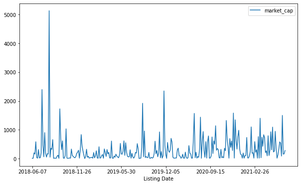

News IO Data
News Source Distribution
Reuters covered 55% of a total of 6496 "Hong Kong" related news since January 2019.
Protest Keyword Over Time
From above timeseries, there is an exploding amount of news since June 2019 and fading away on Dec 2019. This period matches with the timeline of the protest, which aggravated since June. However, this trend does not seem to capture the first wave of the sit-in protest, which took place since March.
News Word Cloud
Some keywords jump out from the word cloud like "China", "US", "Protest", "National Security". Their large pressence, combining with the previous chart, validates that 2019's exploding new coverage is due to the protest. This gives a good starting point. Clustering section will show further analysis on the shift of news coverage.
Reddit Data
Quantitative Values Summary
Since Jan 2019, there are 6170 submissions from reddit about Hong Kong. Among them, 17% contain the keyword "protest". It is also worthy to note that quantitative values have large range, like the score of an individual submission ranges from 2 to 69k.
Protest Keyword Overtime
The keyword exploding of Reddit matches with that from News data, except Reddit data seems to be more extreme and ephemeral.
Subreddit Distribution
This pie chart shows the main subreddits with Hong Kong related submission. Subreddits with very few submissions are hidden from the chart.
Reddit Word Cloud
Reddit's word cloud does not match with the one from news data. The highlighted keywords suggest a more diverse of interets from reditters.
Hong Kong IPO Listing Data
Quantitative Values Summary
There are 448 IPO listings on Hong Kong Stock Exchange since June 2018.
IPO Market Value Over Time
IPO transactions is more active before 2018, but it remained strong during protest period Jun - Dec 2019.